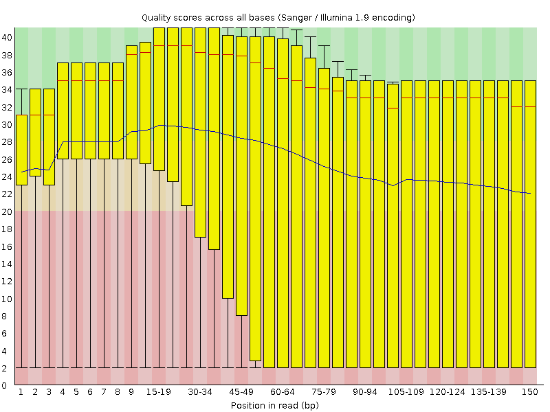

Data Quality Control¶
Key Learning Outcomes¶
After completing this practical the trainee should be able to:
-
Assess the overall quality of NGS (FastQ format) sequence reads
-
Visualise the quality, and other associated matrices, of reads to decide on filters and cutoffs for cleaning up data ready for downstream analysis
-
Clean up adaptors and pre-process the sequence data for further analysis
Resources You’ll be Using¶
Tools Used¶
FastQC:
http://www.bioinformatics.babraham.ac.uk/projects/fastqc/
Skewer:
http://sourceforge.net/projects/skewer/
FASTX-Toolkit:
http://hannonlab.cshl.edu/fastx_toolkit/>
Picard:
http://picard.sourceforge.net/
Useful Links¶
FASTQ Encoding:
http://en.wikipedia.org/wiki/FASTQ_format#Encoding
Introduction¶
Going on a blind date with your read set? For a better understanding of the consequences please check the data quality!
For the purpose of this tutorial we are focusing only on Illumina sequencing which uses ’sequence by synthesis’ technology in a highly parallel fashion. Although Illumina high throughput sequencing provides highly accurate sequence data, several sequence artifacts, including base calling errors and small insertions/deletions, poor quality reads and primer/adapter contamination are quite common in the high throughput sequencing data. The primary errors are substitution errors. The error rates can vary from 0.5-2.0% with errors mainly rising in frequency at the 3’ ends of reads.
One way to investigate sequence data quality is to visualize the quality scores and other metrics in a compact manner to get an idea about the quality of a read data set. Read data sets can be improved by pre processing in different ways like trimming off low quality bases, cleaning up any sequencing adapters, removing PCR duplicates and screening for contamination. We can also look at other statistics such as, sequence length distribution, base composition, sequence complexity, presence of ambiguous bases etc. to assess the overall quality of the data set.
Highly redundant coverage (>15X) of the genome can be used to correct sequencing errors in the reads before assembly. Various k-mer based error correction methods exist but are beyond the scope of this tutorial.
Quality Value Encoding Schema¶
In order to use a single character to encode Phred qualities, ASCII characters are used (http://shop.alterlinks.com/ascii-table/ascii-table-us.php). All ASCII characters have a decimal number associated with them but the first 32 characters are non-printable (e.g. backspace, shift, return, escape). Therefore, the first printable ASCII character is number 33, the exclamation mark (!). In Phred+33 encoded quality values the exclamation mark takes the Phred quality score of zero.
Early Solexa (now Illumina) sequencing needed to encode negative quality values. Because ASCII characters $<$ 33 are non-printable, using the Phred+33 encoding was not possible. Therefore, they simply moved the offset from 33 to 64 thus inventing the Phred+64 encoded quality values. In this encoding a Phred quality of zero is denoted by the ASCII number 64 (the @ character). Since Illumina 1.8, quality values are now encoded using Phred+33.
FASTQ does not provide a way to describe what quality encoding is used
for the quality values. Therefore, you should find this out from your
sequencing provider. Alternatively, you may be able to figure this out
by determining what ASCII characters are present in the FASTQ file. E.g
the presence of numbers in the quality strings, can only mean the
quality values are Phred+33 encoded. However, due to the overlapping
nature of the Phred+33 and Phred+64 encoding schema it is not always
possible to identify what encoding is in use. For example, if the only
characters seen in the quality string are (@ABCDEFGHI), then it is
impossible to know if you have really good Phred+33 encoded qualities or
really bad Phred+64 encoded qualities.
For a graphical representation of the different ASCII characters used in the two encoding schema see: http://en.wikipedia.org/wiki/FASTQ_format#Encoding
Prepare the Environment¶
To investigate sequence data quality we will demonstrate tools called FastQC and Skewer. FastQC will process and present the reports in a visual manner. Based on the results, the sequence data can be processed using the Skewer. We will use one data set in this practical, which can be found in the QC directory on your desktop.
Open the Terminal and go to the directory where the data are stored:
1 2 3 | |
At any time, help can be displayed for FastQC using the following command:
1 | |
Look at SYNOPSIS (Usage) and options after typing fastqc -h
Quality Visualisation¶
We have a file for a good quality and bad quality statistics. FastQC generates results in the form of a zipped and unzipped directory for each input file.
Execute the following command on the two files:
1 2 | |
View the FastQC report file of the bad data using a web browser such as firefox. The ’&’ sign puts the job in the background.
1 | |
The report file will have a Basic Statistics table and various graphs and tables for different quality statistics. E.g.:
| Filename | qcdemo_R2.fastq.gz |
|---|---|
| File type | Conventional base calls |
| Encoding | Sanger / Illumina 1.9 |
| Total Sequences | 1000000 |
| Filtered Sequences | 0 |
| Sequence length | 150 |
| %GC | 37 |
FastQC Basic Statistics table

Per base sequence quality plot for
qcdemo_R2.fastq.gz.

A Phred quality score (or Q-score) expresses an error probability. In
particular, it serves as a convenient and compact way to communicate
very small error probabilities. The probability that base A is wrong P(sim A) is expressed by a quality score, Q(A), according to the
relationship:
Q(A) =-10 log10(P(sim A))
The relationship between the quality score and error probability is demonstrated with the following table:
| Quality score | Error probability | Accuracy of the base call |
|---|---|---|
| 10 | 0.1 | 90% |
| 20 | 0.01 | 99% |
| 30 | 0.001 | 99.9% |
| 40 | 0.0001 | 99.99% |
| 50 | 0.00001 | 99.999% |
Error probabilities associated with various quality (Q) values
[tab:quality_error_probs]

- How many sequences were there in your file? What is the read length?
This is a spoiler: {%s%}Hello World.{%ends%}
1 | |
-
Does the quality score values vary throughout the read length? (hint: look at the ’per base sequence quality plot’)
Yes. Quality scores are dropping towards the end of the reads.
-
What is the quality score range you see?
2-40
-
At around which position do the scores start falling below Q20 for the 25% quartile range (25%of reads below Q20)?
Around 30 bp position
-
How can we trim the reads to filter out the low quality data?
By trimming off the bases after a fixed position of the read or by trimming off bases based on the quality score.
Good Quality Data¶
View the FastQC report files fastqc_report.html to see examples of a
good quality data and compare the quality plot with that of the
bad_example_fastqc.
1 | |
Sequencing errors can complicate the downstream analysis, which normally requires that reads be aligned to each other (for genome assembly) or to a reference genome (for detection of mutations). Sequence reads containing errors may lead to ambiguous paths in the assembly or improper gaps. In variant analysis projects sequence reads are aligned against the reference genome. The errors in the reads may lead to more mismatches than expected from mutations alone. But if these errors can be removed or corrected, the read alignments and hence the variant detection will improve. The assemblies will also improve after pre-processing the reads to remove errors.
Read Trimming¶
Read trimming can be done in a variety of different ways. Choose a method which best suits your data. Here we are giving examples of fixed-length trimming and quality-based trimming.
Quality Based Trimming¶
Base call quality scores can be used to dynamically determine the trim points for each read. A quality score threshold and minimum read length following trimming can be used to remove low quality data.
The previous FastQC results show R1 is fine but R2 has low quality at the end. There is no adaptor contamination though. We will be using Skewer to perform the quality trimming.
Run the following command to quality trim a set of paired end data.
cd ~/qc
skewer -t 20 -l 50 -q 30 -Q 25 -m pe qcdemo_R1.fastq.gz qcdemo_R2.fastq.gz
-t : number of threads to use
-l : min length to keep after trimming
-q : Quality threshold used for trimming at 3’ end
-Q : mean quality threshold for a read
-m : pair-end mode
Run FastQC on the quality trimmed file and visualise the quality scores.
1 2 3 4 | |
Let’s look at the quality from the second reads. The output should look like:
FastQC Basic Statistics table
| Filename | qcdemo_R1.fastq-trimmed-pair2.fastq |
|---|---|
| File type | Conventional base calls |
| Encoding | Sanger / Illumina 1.9 |
| Total Sequences | 742262 |
| Filtered Sequences | 0 |
| Sequence length | 50 |
| %GC | 37 |
Per base sequence quality plot for the quality-trimmed
qcdemo_R2.fastq.gz

- Did the number of total reads in R1 and R2 change after trimming?
Quality trimming discarded >1000 reads. However, We retain a lot of maximal length reads which have good quality all the way to the ends.
- What reads lengths were obtained after quality based trimming?
50-150 Reads <50 bp, following quality trimming, were discarded.
- Did you observe adapter sequences in the data?
No. (Hint: look at the overrepresented sequences.
- How can you use -a option with fastqc ? (Hint: try fastqc -h).
Adaptors can be supplied in a file for screening.
Adapter Clipping¶
Sometimes sequence reads may end up getting the leftover of adapters and primers used in the sequencing process. It’s good practice to screen your data for these possible contamination for more sensitive alignment and assembly based analysis.
This is particularly important when read lengths can be longer than the molecules being sequenced. For example when sequencing miRNAs.
Various QC tools are available to screen and/or clip these adapter/primer sequences from your data. Apart from skewer which will be using today the following two tools are also useful for trimming and removing adapter sequence.
Cutadapt: (http://code.google.com/p/cutadapt/) Trimmomatic: (http://www.usadellab.org/cms/?page=trimmomatic)
Here we are demonstrating Skewer to trim a given adapter sequence.
1 2 3 | |
-x : adaptor sequence used
-t : number of threads to use
-l : min length to keep after trimming
-L : Max length to keep after trimming, in this experiment we were
expecting only small RNA fragments
-Q : Quality threshold used for trimming at 3’ end. Use -m option to
control the end you want to trim
Run FastQC on the adapter trimmed file and visualise the quality scores. Fastqc now shows adaptor free results.
1 2 | |
An alternative tool, not installed on this system, for adapter clipping
is fastq-mcf. A list of adapters is provided in a text file. For more
information, see FastqMcf at
http://code.google.com/p/ea-utils/wiki/FastqMcf.
Fixed Length Trimming¶
We will not cover Fixed Length Trimming but provide the following for your information. Low quality read ends can be trimmed using a
fixed-length trimming. We will use the fastx_trimmer from the
FASTX-Toolkit. Usage message to find out various options you can use
with this tool. Type fastx_trimmer -h at anytime to display help.
We will now do fixed-length trimming of the bad_example.fastq file
using the following command. You should still be in the qc directory, if
not cd back in.
1 2 3 4 | |
We used the following options in the command above:
-Q 33 : Indicates the input quality scores are Phred+33 encoded
-f : First base to be retained in the output
-l : Last base to be retained in the output
-i : Input FASTQ file name
-o : Output file name
Run FastQC on the trimmed file and visualise the quality scores of the trimmed file.
1 2 | |
The output should look like:
| Filename | bad_example_trimmed01.fastq |
|---|---|
| File type | Conventional base call |
| Encoding | Sanger / Illumina 1.9 |
| Total Sequences | 40000 |
| Filtered Sequences | 0 |
| Sequence length | 80 |
| %GC | 48 |
: FastQC Basic Statistics table

What values would you use for -f if you wanted to trim off 10 bases at
the 5’ end of the reads?
-f 11
Removing Duplicates¶
Duplicate reads are the ones having the same start and end coordinates. This may be the result of technical duplication (too many PCR cycles), or over-sequencing (very high fold coverage). It is very important to put the duplication level in context of your experiment. For example, duplication level in targeted or re-sequencing projects may mean something different in RNA-seq experiments. In RNA-seq experiments oversequencing is usually necessary when detecting low abundance transcripts.
The duplication level computed by FastQC is based on sequence identity at the end of reads. Another tool, Picard, determines duplicates based on identical start and end positions in SAM/BAM alignment files.
We will not cover Picard but provide the following for your information.
Picard is a suite of tools for performing many common tasks with SAM/BAM format files. For more information see the Picard website and information about the various command-line tools available:
http://picard.sourceforge.net/command-line-overview.shtml
A good list of tools for filtering PCR duplication can also be found at http://omictools.com/duplicate-reads-removal-c495-p1.html
Picard is installed on this system in /usr/share/java
One of the Picard tools (MarkDuplicates) can be used to analyse and remove duplicates from the raw sequence data. The input for Picard is a sorted alignment file in BAM format. Short read aligners such as, bowtie, BWA and tophat can be used to align FASTQ files against a reference genome to generate SAM/BAM alignment format.
Interested users can use the following general command to run the MarkDuplicates tool at their leisure. You only need to provide a BAM file for the INPUT argument (not provided):
cd ~/qc
java -jar /usr/share/java/MarkDuplicates.jar INPUT=<alignment_file.bam> VALIDATION_STRINGENCY=LENIENT OUTPUT=alignment_file.dup METRICS_FILE=alignment_file.matric ASSUME_SORTED=true REMOVE_DUPLICATES=true